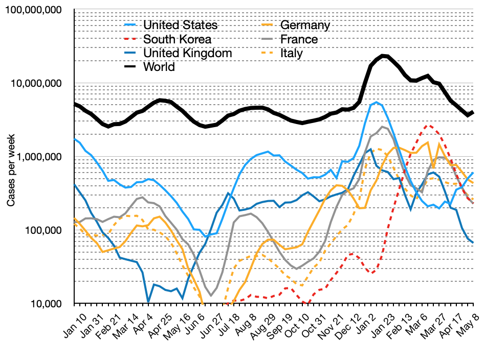

Most people infected with the virus will experience mild to moderate respiratory illness and recover without requiring special treatment.
However, some will become seriously ill and require medical attention. Older people and those with underlying medical conditions like cardiovascular disease,
diabetes, chronic respiratory disease, or cancer are more likely to develop serious illness. Anyone can get sick with COVID-19 and become seriously ill or die
at any age.
The best way to prevent and slow down transmission is to be well informed about the disease and how the virus spreads.
Protect yourself and others from infection by staying at least 1 metre apart from others, wearing a properly fitted mask, and washing your hands or using an
alcohol-based rub frequently. Get vaccinated when it’s your turn and follow local guidance.
Prevention 2
To prevent infection and to slow transmission of COVID-19, do the following:
Get vaccinated when a vaccine is available to you.
Stay at least 1 metre apart from others, even if they don’t appear to be sick.
Wear a properly fitted mask when physical distancing is not possible or when in poorly ventilated settings.
Choose open, well-ventilated spaces over closed ones. Open a window if indoors.
Wash your hands regularly with soap and water or clean them with alcohol-based hand rub.
Cover your mouth and nose when coughing or sneezing.
If you feel unwell, stay home and self-isolate until you recover.
Etymology
The pandemic is known by several names. It is often referred in news media as the "coronavirus
pandemic",[9] despite the existence of other human coronaviruses that have caused epidemics and
outbreaks (e.g. SARS).[10]
During the initial outbreak in Wuhan, the virus and disease were commonly referred to as "coronavirus",
"Wuhan coronavirus",[11] "the coronavirus outbreak" and the "Wuhan coronavirus outbreak"[12] with
the disease sometimes called "Wuhan pneumonia".[13][14] In January 2020, the WHO recommended
2019-nCoV[15] and 2019-nCoV acute respiratory disease[16] as interim names for the virus and
disease per 2015 international guidelines against using geographical locations (e.g. Wuhan, China),
animal species, or groups of people in disease and virus names in part to prevent social stigma.
[17] WHO finalized the official names COVID-19 and SARS-CoV-2 on 11 February 2020.[18]
Tedros Adhanom explained: CO for corona, VI for virus, D for disease and 19 for when the
outbreak was first identified (31 December 2019).[19] WHO additionally uses "the COVID-19
virus" and "the virus responsible for COVID-19" in public communications.[18]
WHO names variants of concern and variants of interest using Greek letters. The initial practice of
naming them according to where the variants were identified (e.g. Delta began as the "Indian variant")
is no longer common.[20] A more systematic naming scheme reflects the variant's PANGO lineage
(e.g., Omicron's lineage is B.1.1.529) and is used for other variants.
CASES
Official "case" counts refer to the number of people who have been tested for COVID-19 and whose
test has been confirmed positive according to official protocols whether or not they experienced
symptomatic disease.[46][47] Due to the effect of sampling bias, studies which obtain a more accurate
number by extrapolating from a random sample have consistently found that total infections
considerably exceed the reported case counts.[48][49] Many countries, early on, had official policies
to not test those with only mild symptoms.[50][51] The strongest risk factors for severe illness are
obesity, complications of diabetes, anxiety disorders, and the total number of conditions.[52]
In early 2020, a meta-analysis of self-reported cases in China by age indicated that a relatively
low proportion of cases occurred in individuals under 20.[53] It was not clear whether this was
because young people were less likely to be infected, or less likely to develop symptoms and be
tested.[54] A retrospective cohort study in China found that children and adults were just as likely
to be infected.[55]
Among more thorough studies, preliminary results from 9 April 2020 found that in Gangelt, the centre of a major infection cluster in Germany, 15 percent of a population sample tested positive for antibodies.[56] Screening for COVID-19 in pregnant women in New York City, and blood donors in the Netherlands, found rates of positive antibody tests that indicated more infections than reported.[57][58] Seroprevalence-based estimates are conservative as some studies show that persons with mild symptoms do not have detectable antibodies.[59]
Initial estimates of the basic reproduction number (R0) for COVID-19 in January were between 1.4 and 2.5,[60] but a subsequent analysis claimed that it may be about 5.7 (with a 95 percent confidence interval of 3.8 to 8.9).[61]
In December 2021, the number of cases continued to climb due to several factors including new COVID-19
variants. As of that 28 December, 282,790,822 individuals worldwide had been confirmed as infected.
[62] As of 14 April 2022, over 500 million cases were confirmed globally.[63] Most cases are
unconfirmed with the Institute for Health Metrics and Evaluation estimating the true number of
cases as of early 2022 to be in the billions.[64][65]
Cumulative confirmed cases by country, as of 1 December 2021

Semi-log plot of weekly new cases of COVID-19 in the world and the current top six countries
(mean with deaths)
Total COVID-19 cases per 100,000 people from selected countries.
65.7% of the world population has received at least one dose of a COVID-19 vaccine.
11.77 billion doses have been administered globally, and 5.85 million are now administered
each day.
Only 15.9% of people in low-income countries have received at least one dose.
The World Health Organization (WHO) on March 11, 2020, has declared the novel coronavirus
(COVID-19) outbreak a global pandemic (1). At a news briefing , WHO Director-General,
Dr. Tedros Adhanom Ghebreyesus, noted that over the past 2 weeks, the number of cases outside China
increased 13-fold and the number of countries with cases increased threefold. Further increases
are expected. He said that the WHO is "deeply concerned both by the alarming levels of spread.